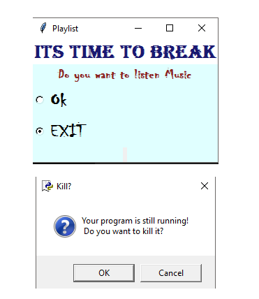
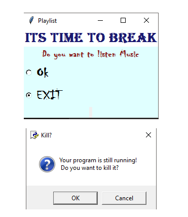

4. METHODOLOGY
In simple terms, methodology is nothing but a system of methods used to develop Application.
The main goal of these methodologies is to make the process more predictable and efficient [24].
Software Development Process Model (SDLC)
It is a process of creating or altering information systems, mythologies and models [25]. The Software Development Process Model used to develop this Application is LINEAR-SEQUENTIAL LIFE CYCLE MODEL. It is also referred to as a Waterfall Model. In recent times, the prominent methodological approaches for developing software for a computer based information system are the popular traditional linear-sequential life cycle model [26]. As the name itself specifies that the Application development process will be in linear sequential flow. Waterfall model uses a linear approach and is suitable for sequential or procedural design. Fowler [27] confirms that waterfall model divides application based on activities: requirement analysis, design, coding and testing. In "The Waterfall" approach, complete process of Application development is divided into separate phases. Each phase must be completed before the next phase can begin and there is no overlapping in the phases. The phases involved in waterfalls model are five and they are analysis, design, implementation, testing and operation and maintenance [26].
Fig. The phases of a Waterfall Model (Adapted from Pfleeger and Atlee [26]
The sequential phases involved in stress Breaker application development are:
Analysis:
Analysis describes that what are the requirements needed to develop software system. In general terms it refers to requirement analysis or gathering [28]. This is the first phase in which requirements are gathered from building stress breaker Application. The requirements include
A functional requirement describes the functionality of the System that is what the Application does with the computation.
Use cases are a means to typically capture functional requirements in UML.Use Case Diagram
Represents Dynamic behavior of the ApplicationUse case diagram consists of
Use Case Diagram for Stress BreakerApplication

Steps of execution
1. The user runs the application.
2. After Time event a message box will be displayed
3. The user can click any button based on his choice
4a.The user click Listen music button.
4b. User click cancel button.
Description
The user runs the application on his desktop after a specified amount of time period the application executes and display a pop-up Message box. The Message box contains a message and two buttons. First button has text Listen music when the user selects it, he has a choice to select a song from music folder from his system. After selecting the music folder a playlist will be display- ed providing the user with three more option buttons. The first button is to play previous song. The next button is for Next Song. Third Button is for stop song. If the user is too busy with his work or any other important project he has a choice to cancel the message box window by using the can- cel button.
Functionalities in stress breaker are:
1. The Application executes and displays a pop-up Message box.
2. The Message box contains a message and two buttons. First button has text Listen music the second button is for cancelling.
3a. If the user presses the listen music button user had a choice to select any music folder in his system.
3b. After selecting Music folder user has a choice to select songs of his choice.
4. If the user clicks cancel button the message box will be closed.
4.1 SYSTEM DESIGN
System Design helps in specifying hardware and system requirements and also helps in defining Overall system architecture.
NON-FUNCTIONAL REQUIREMENTS
Unlike functional requirements Non-functional requirements place constraints on how the system will do .They refer to application non-functional properties, system qualities such as security,accuracy,performance,cost,usability,adaptability,interoperability,reliability and so on..
Typical non-functional requirements include:
System information used to develop this application
State chat Diagram
It describes different states of a components in an Application.
State chart diagram describes the flow of control from one state to another state in an application.

Implementation
This phase is concerned with the physical construction of the software as set out in the design stage.Software requirements needed to develop this application are Programming language
Python was chosen for the development of this Application Python 3.5 is used in implementing the code for this application. Python is a widely used general-purpose, high-level programming language [30] [31] [32]. It is fast and powerful programming language and it is portable. Python scripts can be used on different operating systems such as: Windows, Linux, UNIX, Amigo, Mac OS, etc. Python is open source .Even though all rights of this program are reserved for the Python institute, but it is open source and there is no limitation in using, changing and distributing [29].
Constraint Requirements
GRAPHICAL USER INTERFACE (GUI) This application is designed using python graphical User Interface (GUI) named Tkinter. Graphical User Interface (GUI) Tkinter is a standard interface that is distributed with Python interpreter. It provides the essential tools for designing GUI. Generated GUIs are in pmw format and they have a similar look on the different platforms. Tkinter are the basic interfaces for designing GUIs in Python [29].
Pygame Module
In python programs, code normally contains functions and variables. So when the user quit from our interpreter, all definitions are lost. As user codes get longer, it gets very inconvenient to redefine all the values for variables. To solve this problem, the user has a solution: To support this, Python has a way to put definitions in a file and use them in a Script or in an interactive instance of the interpreter. Such a file is called a module. Module: A module is a file containing Python definitions and statements [33].
Pygame is a set of Python modules designed for writing games and multimedia. It is highly portable and can run nearly every platform and operating system [33]. In this Application Pygame feature are used for playing songs. It contains an excellent function for controlling streamed audio. The music module is closely tied to Pygame mixer. Here downloaded mp3 songs are converted into the OGG because mp3 support is limited. On some systems an unsupported format can crash the program [34].
Integrated Development Environment (IDE)
IDE used to develop this Application is Pycharm. It is one of the integrated development environment (IDE) used in python programming language. Programming code used to develop this application is interpreted in Pycharm.
Installation process:
- Download python 3.5 from python official website www.python.org based on user operating system
- Install it on users system
- Download pygame from python binaries Location [35].
- Go to python IDLE folder and then scripts and paste the pygame files in that location
- Go to command prompt type PIP"space install space pygame version
- pygame is successfully installed n users computer
- Go to Pycharm official website [36] and download Pycharm and install it.
Integration and Testing
After the implementation phase the coding is tested by using pycharm debugger and interpreter.
Maintenance
After the delivery of the Application, a schedule maintenance and support is put into place, to ensure the Application continues to work as designed.
ACCURACY AND PRECISION
Since this is a desktop application there is less percentage of failure.Cost
This application is inexpensive to develop because the main requirements, develop this application that is python, pygame are open sourced. They can be downloaded for free from their official website.
Usability
This application is easy to use. Look and feel standards: Pycharm provides many keyboard shortcuts to run the Application
F5 – To run the python Application in python (IDLE)
Alt+Shift+F10-To run the python Application in Pycharm
Alt+Shift+F9-To debug python Application in Pycharm.
Modifiability
One good thing about python Tkinter is it has many GUI properties available that make the application even more attractive and efficient. Extra GUI properties that can be added to this application is color texts, scroll bar, bold text and many other features.
Response time
The response time depends on the user choice. Since, this an alert application which breaks the employee stress. The response time depends on the time set by the user. For example, if the user wish to have breaks for every 50 minutes. Then the response time of the application would be 50 minutes. That is after every 50mintues a pop up box will be displayed specifying the user to take breaks and listen the music of his choice.
Activity Diagram
Activity diagram is basically a flow chart to represent the flow from one activity to another activity.Processing time
The processing time for this application is quick. When the user click the listen music button with in no time delay it automatically opens the folder window so that user can select music folder. When the user selects music folder, it imports all the songs from the music folder and display on the playlist. Overall performance time to run this application less than half minute, which is a very short time.
Advantage
The main benefit of using a waterfall model in developing stress Breaker Applications is it is inexpensive and quick.Tools Installation
STEPS TO INSTALL PYTHON3.5
In order to use Python, user must install python on his/her computer
- Go to the python website www.python.org
- Click on the Download menu choice
- Click on the Python 3.5
- Once user downloaded the file , open it.(Double click it)
- Installation starts
- Click finish to exit the installer.
STEPS TO INSTALL PYGAME
- User should make sure that his path variable includes both python directory and the scripts directory.
- Go to http://www.lfd.uci.edu/~gohlke/pythonlibs/#pygame
- Click and download pygame package (64bit/32bit)
- Go to python IDLE folder and then scripts and paste the pygame files in that location.
- Now user is ready to install pygame. At the command prompt, user should make sure whether he is in the same directory of python and the type pip space install space pygame version:
- Successfully installed pygame.
STEPS TO INSTALL PYCHARM
- Go to www.jetbrains.com
- Select IDE Option and select python ide for professional developers
- Click on download
- Select the operating system.
- There is community and Professional edition.
 
